The non-linear bicycle model considers longitudinal (x), lateral (y), and yaw motion under the assumption of negligible lateral weight shift, roll and compliance steer while traveling on a smooth road. Our design of control strategy is to control both longitudinal and lateral motions during hard braking and steering maneuvers. Angular velocities of front and rear tires are added to the states in order to investigate directional interactions between longitudinal and lateral tire forces. In addition to these five states, longitudinal and lateral positions and yaw angle with respect to the fixed inertial coordinates are added to the dynamic equation in order to refresh the vehicle position and orientation in the simulation scene. Thus, the bicycle model used in our simulator has 5 Degrees Of Freedom with 8 state equations. The bicycle model developement presented here is based on reference [1]. Figure 1 shows side and top views of the vehicle using this bicycle model. Using free body diagram shown in top view of Figure 1, the equations of motion are derived.
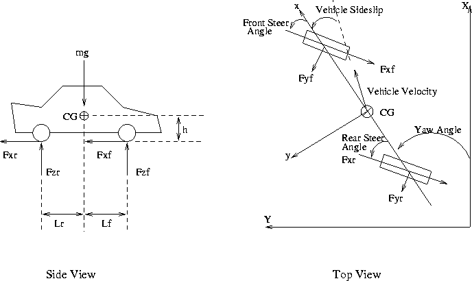
Figure 1: Free Body
Diagram of a Vehicle
Summing the longitudinal forces along the body x axis leads to
Where m is the mass of a vehicle, 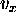 and 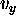 are the longitudinal and lateral components of the vehicle velocity resolved along the body axis, r is the yaw rate, and and are the front and rear wheel steering angles. Summing the lateral forces along the body y axis gives
The sum of the yaw moments about the car CG yields
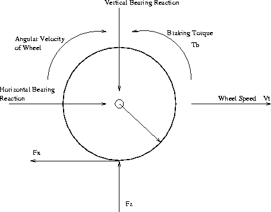
Figure 2: Free Body
Diagram of a Wheel
For the front and rear wheels, the sum of the torque about the axle, as shown in Figure 2, results in
Where, 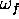 and 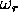 are the angular velocities of the front and rear wheels, 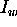 is the inertia of the wheel about the axle, 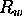 is the wheel radius, 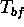 and 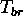 are the applied braking torques, and 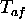 and 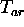 are the applied throttling torques for the front and rear wheels. All the vehicle specifications are based on the 1984 Honda Accord [2] with reasonable braking torques for front and rear tires. Yaw angle is directly found by integrating the yaw rate. Since yaw angle is with respect to the fixed coordinates, longitudinal and lateral position with respect to the inertial fixed coordinates are also found as follows.
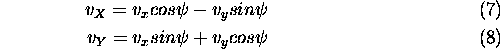
Where, 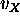 and 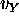 denote the velocity components with respect to the fixed inertial coordinates. Simple integration based on the forth-order Runge-Kutta method is used to integrate the above eight states in the simulation loop.
The longitudinal and lateral forces from front and rear tires are derived from the non-linear tire model discussed earlier. The input variables for the tire model are front and rear normal loads ( 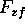 and 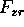 ), slip angles ( and ), and longitudinal slip ratios ( 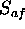 and 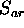 ). The normal forces of front and rear tires are determined according to the instantaneous longitudinal acceleration. Summing the moments about the rear contact patch using the side view of Figure 1, normal load of front tire is found as
Summing the moments about the front contact patch,
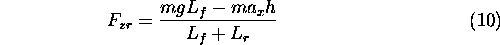
Where
is the instantaneous longitudinal acceleration and h
is the height of the car CG from the ground.
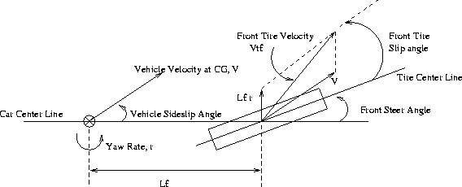
Figure 3: Slip Angle
of Front Wheel
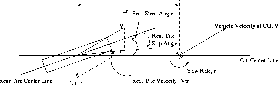
Figure 4: Slip Angle
of Rear Wheel
From Figure 3 and Figure 4, velocities of front and rear tires are determined by summing the velocity at CG and the velocities effected by the yaw rate. Thus, the slip angles of front and rear tires are found as
Also, the speed of the front and rear tires are calculated by the following equations.
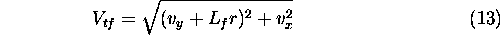
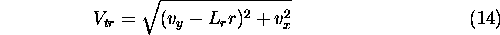
Where, 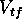 and 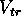 represent the magnitude of the front and rear tire axle velocities. To calculate the longitudinal slip, longitudinal component of the tire velocity should be derived. The front and rear longitudinal velocity components are found by
Then, the longitudinal slip is determined according to the equation in tire model. Under braking conditions, longitudinal slip of front and rear tires are calculated by
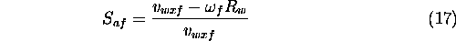
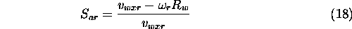
Using the normal load, slip angle, longitudinal slip, and
non-linear tire model realistic longitudinal and lateral forces
are generated for the 5 DOF bicycle model.
References